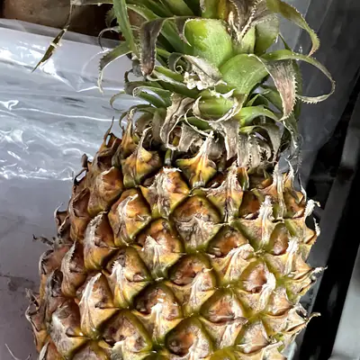

This site is juicy
A demo landing page in fruit colors. The citrus slice is drawn with CSS gradients.
Press the slice to pause it.
Strawberries
Each seed on the skin is a fruit of its own.

Kiwi
Weight for weight, more vitamin C than an orange.

Pineapple
A plant grows one fruit at a time, and each one takes over a year.

Blueberries
The pale blue is a coat of wax. Rub it off and the berry is almost black.

Three files. Nothing to build or install.
Each file name opens its source on GitHub.
Compressed sizes, as your browser received them on this visit. 1 kB is 1000 bytes.